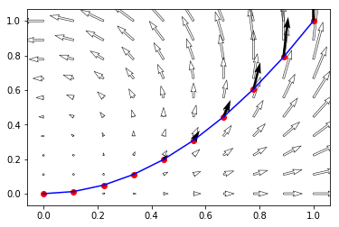

Contour Integration
A contour is a finite collection of paths joined end to end. A path can be represented as a continuous function form an closed iterval to as follows Then the integration of any complex function along this path is is given by
Question: Find the integration of along the parabolic path from to .
Answer: In order to find the integration we have to find to parametrize the curve as , .
%matplotlib inline import numpy as np from matplotlib import pyplot as plt from sympy import symbols, integrate, diff, init_printing, lambdify, N from utility import argand init_printing()
x,y,t = symbols("x y t") def γ(t): return t + t**2 * 1j def f(z): return z*z # arr = np.linspace(0, 1, 10) # cnums = [γ(t) for t in arr] # imgs = [f(z) for z in cnums] arr = np.linspace(0, 1, 10) # Y = np.linspace(0, 1, 10) X, Y = np.meshgrid(arr, arr) U = X**2 - Y**2 V = 2*X*Y plt.quiver(X, Y, U, V,edgecolor='k', facecolor='None', linewidth=.5) cnums = np.array(list(map(γ, arr ))) imgs = np.array(list(map(f, cnums))) X_0 = list(map(lambda z: z.real, cnums)) Y_0 = list(map(lambda z: z.imag, cnums)) U_0 = list(map(lambda z: z.real, imgs)) V_0 = list(map(lambda z: z.imag, imgs)) plt.plot(X_0, Y_0, color='blue') plt.scatter(X_0, Y_0, color='red') plt.quiver(X_0,Y_0,U_0,V_0) plt.show() # [(f(x+1j*y).real, f(x+1j*y).imag) for x in X for y in Y ]

Numerical Computation¶
We can subdivide the curve into equal parts and then compute the sum as given in the definition. For 100 subdivisions we have the following result
def num_int(n): arr = np.linspace(0, 1, 10*n) cnums = np.array(list(map(γ, arr ))) imgs = np.array(list(map(f, cnums))) Δt = cnums[1:]-cnums[:-1] out = np.dot(imgs[1:],Δt) return out N(num_int(10))
We can improve the accuracy by increasing the number of subdivisions, For example the same integration for 1000 subdivisions will be
N(num_int(100))
We can plot the result for a number of points to see the convergence in complex plane as follows
[argand(num_int(x)) for x in range(1,100)] plt.show()

Parametrization¶
Now we do the same computation using the parametrization of the curve, hence the value turns out to be exactly equalt to
integrate(f(γ(t))*diff(γ(t), t),(t,0,1))